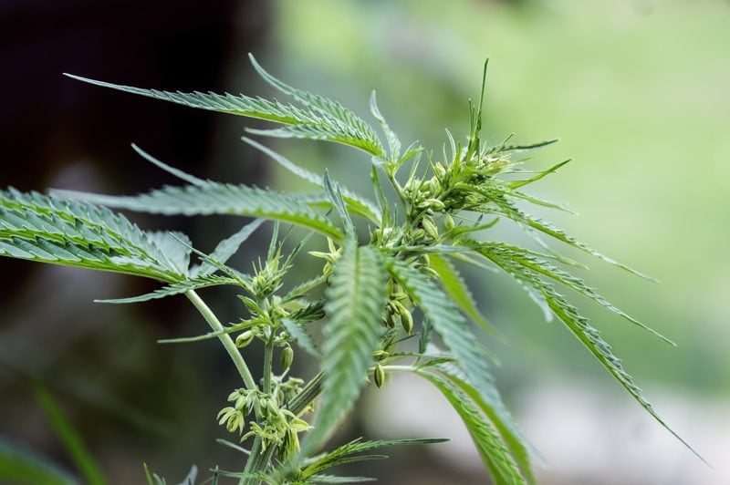
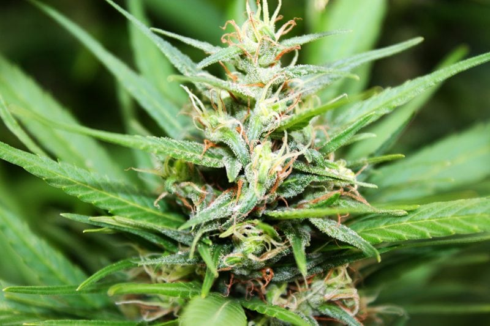

Hemp Seeds – Super Tricky to Harvest
I am considering dropping the word superfood from my vocabulary because just about every raw food is touted a superfood. The truth is… they all are. Each whole food is full of vibration, life, nutrients, and can have powerful effects on the body. Hemp seeds included. Many people are still confused about hemp, believing that they will get high if they consume it. Let me see if I can put your mind at ease (or disappointment) that it doesn’t affect the body or brain that way.

So what exactly is hemp, and how is it different from the psychoactive form of cannabis that we consume medicinally and recreationally? Hemp is an industrial form of cannabis that produces seeds and stalks that can then be used to make a long list of products. It goes way beyond a healthy seed that is used in the raw food diet.
The hemp seeds (or hearts) are the seeds of the hemp plant, or Cannabis sativa. Although marijuana comes from the same plant, hemp seeds only contain a trace amount of THC, the active ingredient in marijuana, and they will not get you high. In fact, hemp seeds are safe and very healthy to eat.
The seeds of the hemp plant are housed in small, brown hulls that are typically removed before we get our hands on them. The white seeds we buy at the store are the inner seeds, sometimes called the heart, and they’re soft enough to eat and cook. When the shells are left on, they are typically roasted for consumption, or you can make a raw, filtered hemp milk.
Planting Hemp Seeds
- Hemp is a photosensitive plant. Around mid-to-late May, farmers plant the hemp seeds. There are about a dozen different seed varieties to choose from, each with slightly different characteristics.
- Once hemp starts growing, it can outcompete weeds, so herbicides are not needed.
- The planting process involves what’s called a seeder – equipment that uniformly and mechanically sows the seed. Seed is planted shallow, with good seed-to-soil contact to ensure seedlings are protected from the environment.
Growing Process
- With the right growing conditions, they will start poking through the ground within four to seven days.
- By July, hemp crops will already be a few feet tall and starting to look a bit like lush mini trees.
- Throughout July and August, the hemp plants grow quickly. Depending on the variety, hemp that is grown for food purposes can grow four to five feet during this period. You will also start seeing seeds developing at the top of the plant, hidden under the leafy part.
- Hemp has distinguishable male and female plants. The male plant pollinates the female plant and then dies off, leaving only the female plants for harvesting. At this stage, you will see green (female) and brown plants (males). (2)
Harvesting Hemp Seeds
The when and how of harvesting hemp all depends on what the hemp is being grown for. But for the sake of how WE here at Nouveauraw.com use hemp, we will just go over how the seeds are harvested. First off, harvesting hemp seed is difficult and tricky. Not only do the seeds mature at different rates on different plants, but they can also mature at different times on the same plant. When the lower seeds near the stalk are mature and have split open, the seeds near the top are not yet mature. The trick is to determine at what point harvesting should take place that will amount to a minimal loss of seed.
- Hemp reaches maturity after around 100 to 120 days. Farmers will know it’s time to harvest by the color of the plants, maturation of seeds, and grain moisture.
- At this time, most of the plant leaf matter has fallen to the ground where it will compost and give nutrients back to the soil for future years. When the seeds reach maturity, reaping should begin immediately.
- A combine harvester equipped with a dual-beam cutter can be used but only during dry, sunny weather after the early morning mist has dissipated.
- They are then almost immediately, cleaned to remove any stocks, leaves, and immature seeds. (1)
Benefits of Hemp Crops
- Hemp requires much less water to grow and no pesticides, so it is much more environmentally friendly than traditional crops.
- Dense growth leaves little room for competing weeds.
- Highly pest-resistant.
- Deep tap roots help to protect the soil.
- Easier to farm organically than most other fibrous crops.
Hemp Uses
Hemp can be grown as a renewable source of raw materials that can be incorporated into thousands of products. Its seeds and flowers are used in health foods, organic body care, and other nutraceuticals.
Usage of Hemp Plant Stalks
The woodier portions of hemp stalks produce a building material known as hempcrete, which is a carbon-negative product that can be used to replace insulation, drywall, and cement in building projects. It is a nontoxic, lightweight, durable, mold/fire-resistant, sustainable, high-quality insulator composed of hemp hurds (the center of the hemp stalk), ground limestone, and water. (1) BUT that’s not all that one can do with the plant stalks…
- Animal bedding
- Mulch
- Chemical Absorbent
- Fiberboard
- Rope / Cordage
- Netting
- Canvas
- Carpet
- Biocomposites
- Clothes
- Shoes
- Bags
- Biofuel/ethanol
- Paper products
- Cardboard
- Filters
Hemp Seed
The seeds are commonly used for nutrient-dense health benefits. They are a balanced source of proteins, essential fats, and vitamins in nature. If you’re looking to improve digestion, balance hormones, and improve metabolism, well… hemp seeds should be part of your eating regime.
- Granola
- Dairy Products
- Protein Powder
- Non-dairy milks
- Flour
- Used in raw cookies, bars, breads, etc.
Hemp Oil
Hemp oil is used in making cooking oils, salad dressings, essential fatty acid supplements, cosmetic products, and industrial oil-based products. It’s also been explored as a biofuel diesel alternative. But, yet again, there are many other applications in which it is used…
- Lubricants
- Ink
- Varnish
- Paint
- Margarine
- Body products

© AmieSue.com